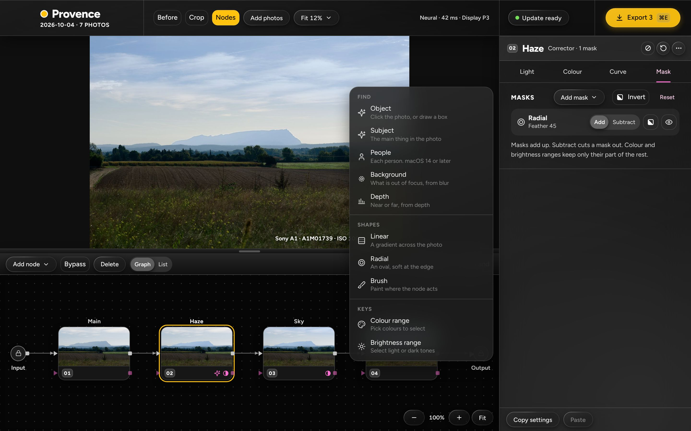
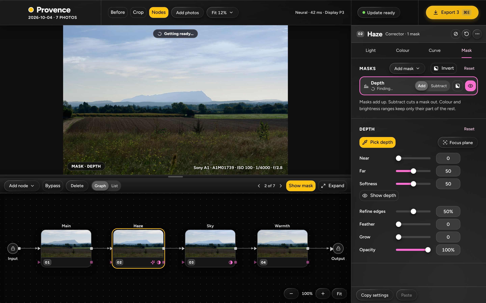
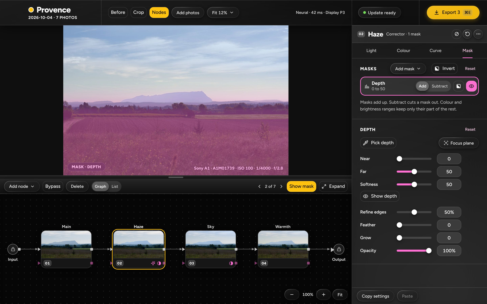
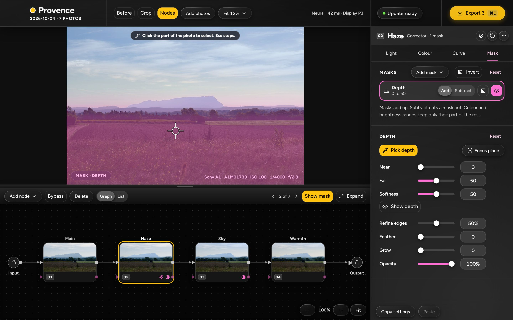
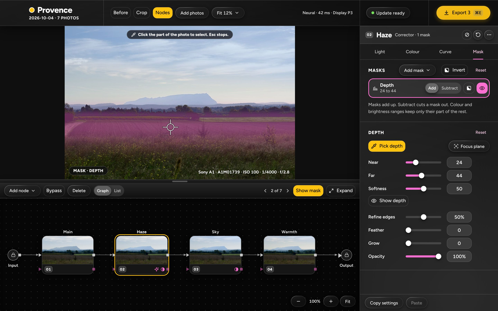
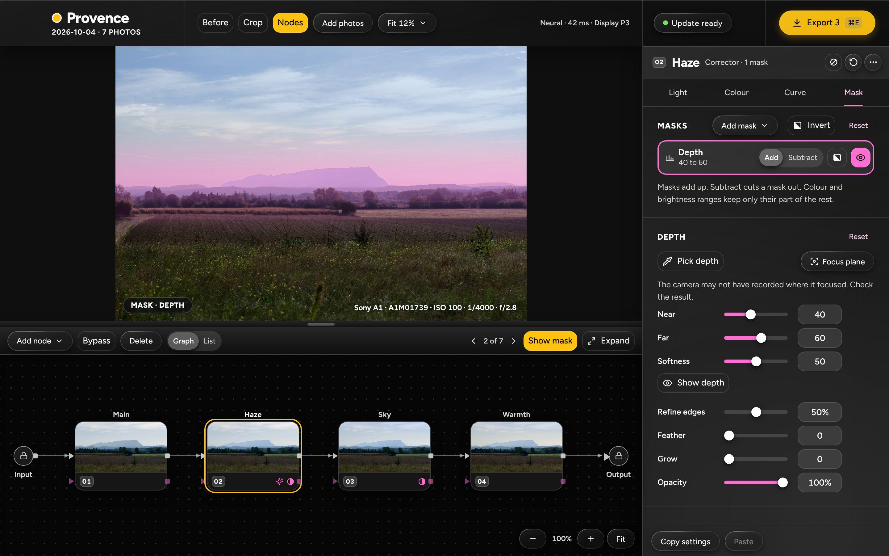
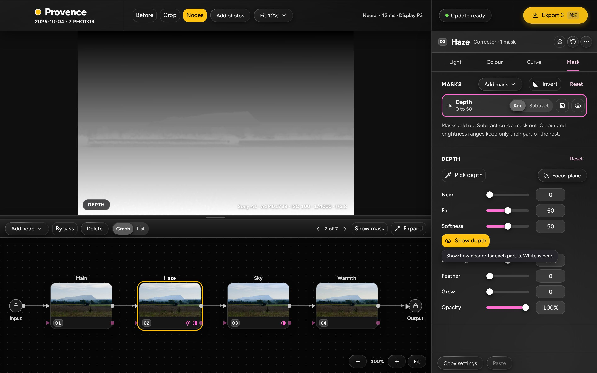
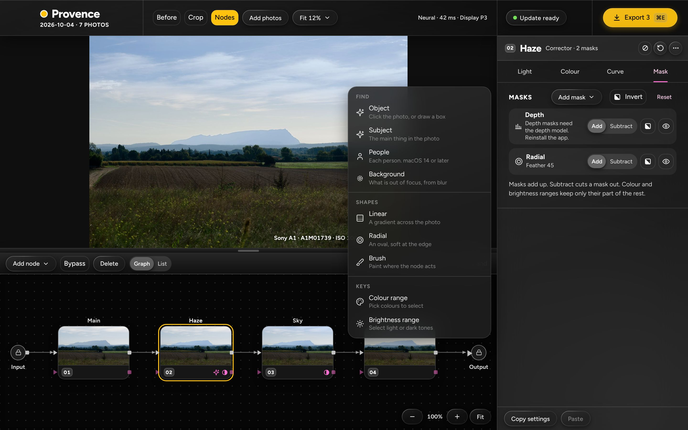
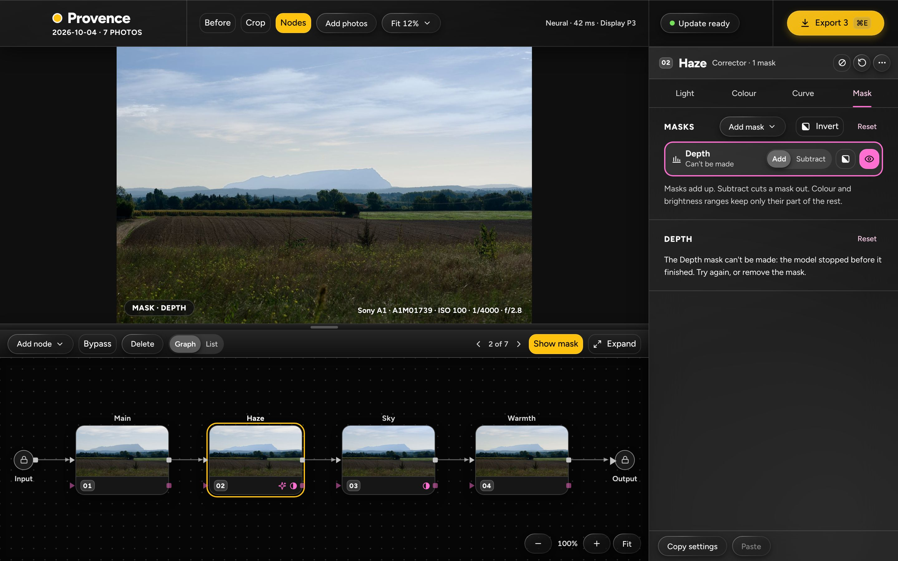
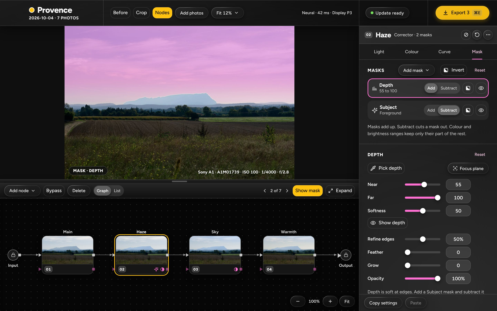

Mockups of the Depth mask interface (D-05, for the owner's approval D-H1). Each picture is a page in html/pages/ built from the app's own DOM and CSS at 1440 × 900, shot at 2×. The photo is the owner's. The depth picture and the tinted masks are made-up stand-ins drawn from the photo's layout, not the model's output. See mockup-notes.md for the copy and the questions.
The Add mask menu

Depth sits under Background in the Find group, with the line "Near or far, from depth". The menu is now 573 px tall (527 px without Depth): see question 3.
A new Depth row while the map is made

The row says "Finding…" with a spinner, the pill over the photo says "Getting ready…", Pick depth is on, and the photo shows no mask yet.
The Depth card, ready

Pick depth, Focus plane (tooltip "Select what the camera focused on"), Near 0, Far 50, Softness 50, Show depth, then the four shared sliders.
Pick depth on

Crosshair over the photo, the pill reads "Click the part of the photo to select. Esc stops."; the tool is yellow like Pick white.
After a click on the field

Near 24 and Far 44, the band around the clicked depth, a fifth of the photo wide. The tool stays on.
Focus plane, no focus point
The button is off and the card says "This photo has no focus point."
Focus plane, point at the centre

The band is made and the card says "The camera may not have recorded where it focused. Check the result."
Show depth

The photo is replaced by its depth, white near. The look chip says "DEPTH", the eye and the toolbar Show mask are off, and the tooltip reads "Show how near or far each part is. White is near."
No depth model

Depth is not in the Add mask menu. A Depth row that came with a file says "Depth masks need the depth model. Reinstall the app." and has no card.
The map failed

The row says "Can't be made"; the card says "The Depth mask can't be made: the model stopped before it finished. Try again, or remove the mask." The model's text here is an invented example.
Depth with a Subject row

Depth 55 to 100 (the far plane) added, Subject subtracted: the sky and haze with the mountain's clean edge. A one-line tip is proposed under the card.